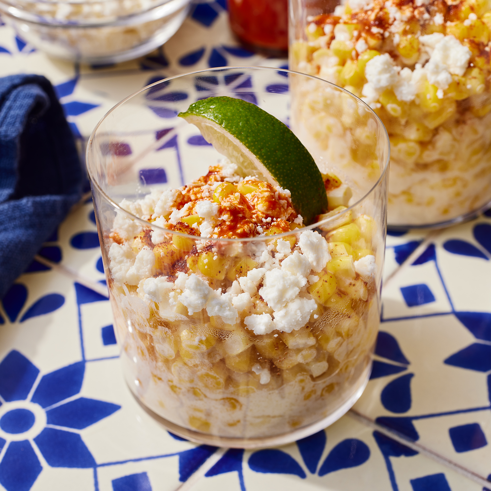

Corn In A Cup Elote En Vaso

Description
Learn how to make elote en vaso with this easy recipe for Mexican
street food at its finest. Every time I visit El Paso or Mexico,
the craving for elote en vaso steps into high gear. Now when I
crave this at home, I can whip it up anytime. I like to make it
fancy by serving it in a pretty glass instead of the traditional
styrofoam cup; the taste is sweet, crunchy, fiery, and juicy no
matter how you serve it. This is a very customizable recipe; feel
free to adjust the proportions of lime juice, crema, cheese, and
spices to taste!
Ingredients
- 10 ears corn, shucked and kernels removed
- 1 ¼ cups butter
- 2 ½ cups lime juice
- 2 ½ cups crema Mexicana (Mexican cream)
- 1 ¼ teaspoons chili powder, or to taste
- salt to taste
- 1 ¼ cups crumbled cotija cheese
- 10 dashes hot pepper sauce (Optional)
- 10 wedges fresh lime
Steps
- Place corn kernels in a saucepan and cover with salted water;
bring to a boil. Reduce heat to medium-low and simmer until
tender, 2 to 3 minutes. Drain and return corn to the saucepan
to dry.
- Spoon 3/4 cup corn into each of 10 serving bowls. Stir 2
tablespoons butter into each bowl until melted. Mix 1/4 cup
lime juice and 1/4 cup crema Mexicana into each bowl.
Sprinkle 1/8 teaspoon chili powder on top and season with
salt.
- Top each serving with 2 tablespoons cotija cheese,
a dash of hot sauce, and a lime wedge.
Back to main page